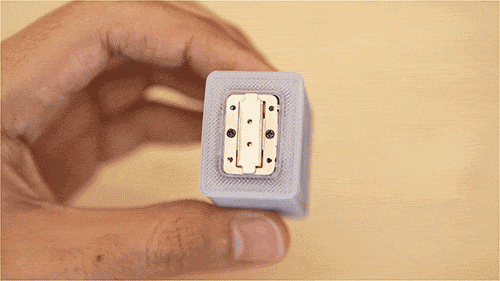
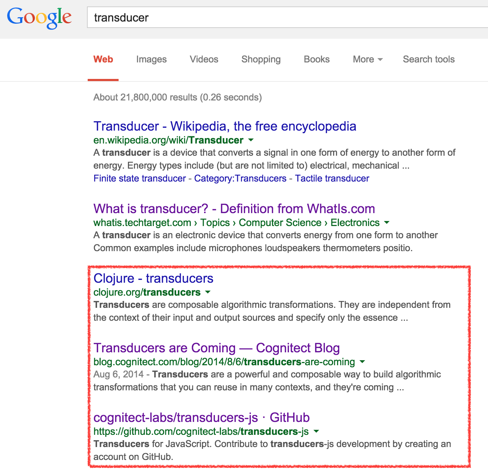
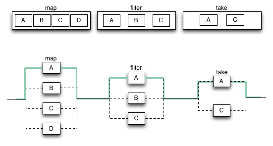
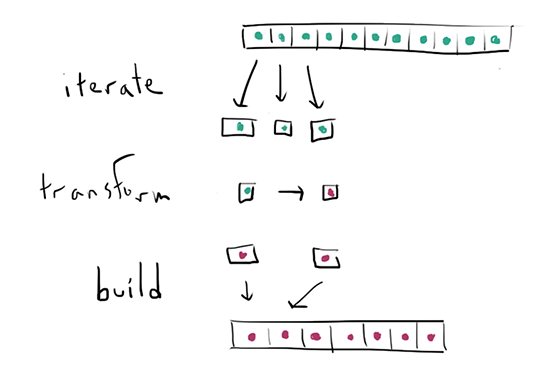

transducers-js
@tancnle
What is a transducer?
A transducer is a device that converts a signal in one form of energy to another form of energy.

The end.

Transducers are composable way to build algorithmic transformations.
- Wat!
Transform + Reduce
Algorithmic transformations
Array/collection operations like map or filter, can be expressed in reduce
Map
[1, 2, 3, 4].map(function (input) {
return input + 1;
}) // -> [2, 3, 4, 5]
Map -> Reduce
[1, 2, 3, 4].reduce(function (result, input) {
return concat(result, input + 1);
}, []) // -> [2, 3, 4, 5]
function concat(a, b) { return a.concat([b]); }
Functional way
function map(transform, collection) {
return collection.reduce(function (result, input) {
return concat(result, transform(input));
}, []);
}
map(function(x) { return x + 1; }, [1, 2, 3, 4]);
// -> [2, 3, 4, 5]
Filter -> Reduce
function filter(predicate, collection) {
return collection.reduce(function (result, input) {
return ( predicate(input) ?
concat(result, input) :
result );
}, [])
}
Filter transformer
var greaterThanTwo = function (x) {
return x > 2;
};
filter(greaterThanTwo, [1 ,2 ,3, 4]);
// -> [3, 4]
Where is my reducing function
function (result, input) {
return ( predicate(input)
? concat(result, input)
: result );
}
Reducing functions
(something, input) -> something
Composable
Fork-join model

Transducer reduce

Sequential
var incrementAndFilter = compose(
filter.bind(null, greaterThanTwo),
map.bind(null, inc)
);
compose(f, g)(a) === f(g(a));
incrementAndFilter([1, 2, 3, 4]);
Map
function map(transform, collection) {
return collection.reduce(
// Reducing function!
function (result, input) {
return concat(result, transform(input));
},
[]
);
}
Extracting reducing function
function mapper (transform) {
return function (result, input) {
return concat(result, transform(input));
};
};
[1, 2, 3, 4].reduce(mapper(inc), []);
// -> [2, 3, 4, 5]
Can we do better?
Step function (concat) still bound to array
function mapper (transform) {
return function (combine) { // <- how to reduce
return function (result, input) {
return combine(result, transform(input));
};
};
};
[1, 2, 3, 4].reduce(mapper(inc)(concat), []);
// replace concat with another mapper for
// extra craziness
[1, 2, 3, 4].reduce(
mapper(inc)(
mapper(multiplyByTwo)(concat)
),
[]
);
Lets compose these... transducers
compose(x, y, z)(val) -> x(y(z(val)))
[1, 2, 3, 4].reduce(
compose(
mapper(inc),
mapper(multiplyByTwo)
)(concat),
[]
);
Functional touch
function transduce(xform, f, init, coll) {
return coll.reduce(xform(f), init);
}
Functional touch
transduce(
compose(
filterer(greaterThanTwo),
mapper(multiplyByTwo)
),
concat,
[],
[1, 2, 3, 4]
);
Input agnostic
- Enumerables/iterables
- Observables
- Streams
- Channels (still experimenting)
Goal
+-----------+-----+---------+----------+-------------+-------+
| | Seq | Streams | Channels | Observables | Cats? |
+-----------+-----+---------+----------+-------------+-------+
| Transduce | x | x | x | x | ? |
+-----------+-----+---------+----------+-------------+-------+
| Map | |
| Filter | |
| Partition | FREEBIES |
| Take | |
+-----------+------------------------------------------------+
FKit (by Josh Bassett)
FKit Compose
F.compose(
F.filter(isEven),
F.map(increment)
)([0, 1, 2, 3, 4]);
Performance
transducers-js x 841,472 ops/sec ±1.60% (87 runs sampled)
transducers.js x 2,064,293 ops/sec ±2.76% (84 runs sampled)
transduce x 941,109 ops/sec ±4.27% (84 runs sampled)
underarm x 812,409 ops/sec ±1.68% (80 runs sampled)
fkit x 138,902 ops/sec ±2.14% (83 runs sampled)
lodash x 95,606 ops/sec ±4.36% (69 runs sampled)
Fastest is transducers.js
In the wild
- transducers.js by @jlongster
- transducers-js by @cognitect
- transduce by @simpletic
underarm
Transducers for JavaScript
with Underscore API and Async extensions
const click = _r().where({type:'click'})
.each(updateCount).asCallback();
const coords = _r().where({type:'mousemove'})
.map(clientCoords)
.each(updateText).asCallback();
const events = _r().each(coords)
.each(click)
.asCallback();
$el.on('mousemove click', events);
Demo
Mouse and Click!
Coding
May the odds be with me
References
Questions
- Twitter: @tancnle
- Github: tancnle